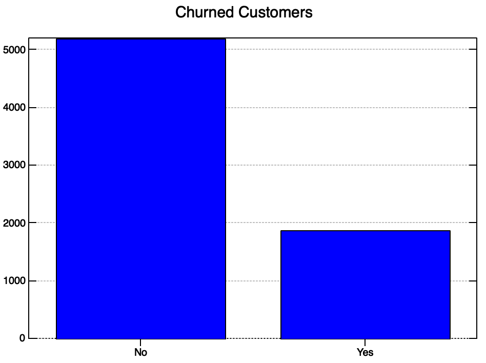
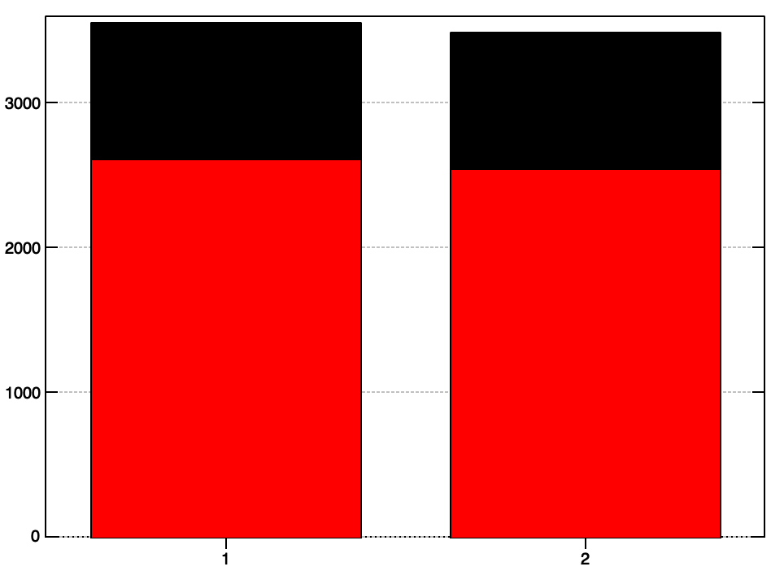
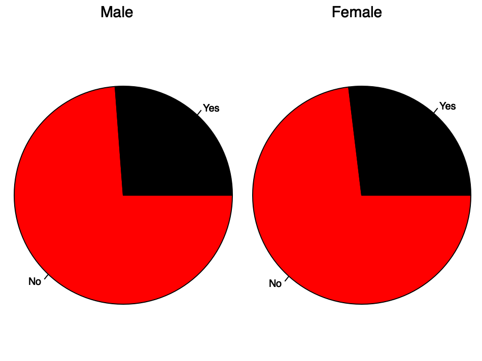
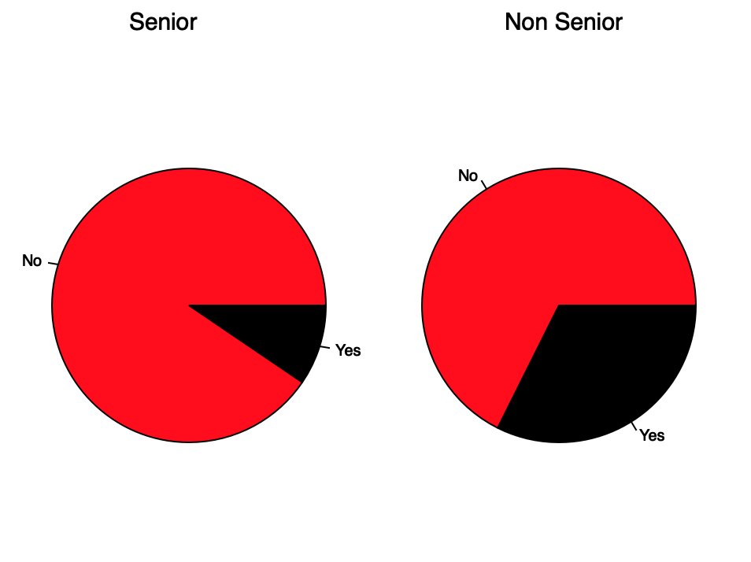
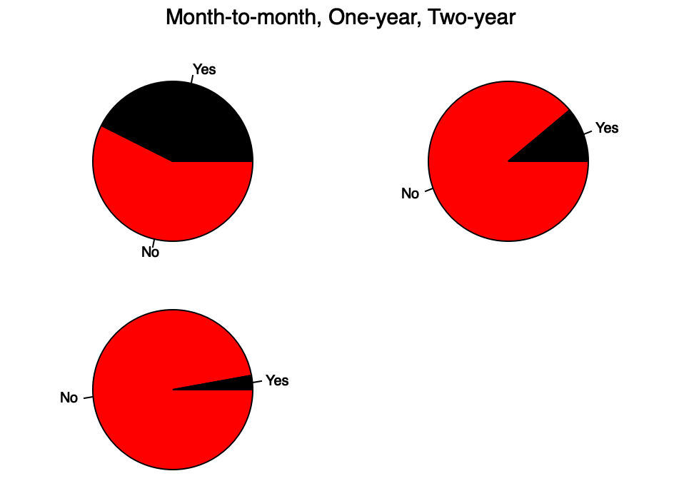

Customer Churn in J
Welcome to another esoteric data science blog. Today, we'll be exploring a small dataset about customer churn. Churn is when a customer, for any number of reasons, is no longer a customer. It can be voluntary or involuntary. Typically, churn analysis focuses on voluntary churn.
We'll start by defining a couple of useful verbs. In J, functions are called verbs. They can be monads or dyads, these are not the 'haskell' version of a monad, but refer to the number of arguments taken in by the verb.
For example, the monad version of # counts the elements of a list. The verb i. with a numeric argument i. 10 generates 0 1 2 3 4 5 6 7 8 9 which we can then count.
# i. 10
10
But the dyad version copies the right argument 'left argument' number of times.
2 # 10
10 10
I want to make some useful verbs for data analysis. Being a lover of the pydata stack, I often use pandas to work with dataframes (inspired by R dataframes). In that spirit, I've named my data array df which was loaded using the 'csv' library in J.
We can define a verb head which is dyadic and takes the number of columns and the dataframe. By using the ranked selector operation { we can index into the dataframe and start exploring our data.
Notice thatyis the right argument (only argument in the monadic case) andxis the left argument.
head =: dyad : '(i. x) { y'
5 head df
┌──────────┬──────┬─────────────┬───────┬──────────┬──────┬────────────┬────────────────┬───────────────┬──────────────┬────────────┬────────────────┬───────────┬───────────┬───────────────┬──────────────┬────────────────┬─────────────────────────┬────────...
│customerID│gender│SeniorCitizen│Partner│Dependents│tenure│PhoneService│MultipleLines │InternetService│OnlineSecurity│OnlineBackup│DeviceProtection│TechSupport│StreamingTV│StreamingMovies│Contract │PaperlessBilling│PaymentMethod │MonthlyC...
├──────────┼──────┼─────────────┼───────┼──────────┼──────┼────────────┼────────────────┼───────────────┼──────────────┼────────────┼────────────────┼───────────┼───────────┼───────────────┼──────────────┼────────────────┼─────────────────────────┼────────...
│7590-VHVEG│Female│0 │Yes │No │1 │No │No phone service│DSL │No │Yes │No │No │No │No │Month-to-month│Yes │Electronic check │29.85 ...
├──────────┼──────┼─────────────┼───────┼──────────┼──────┼────────────┼────────────────┼───────────────┼──────────────┼────────────┼────────────────┼───────────┼───────────┼───────────────┼──────────────┼────────────────┼─────────────────────────┼────────...
│5575-GNVDE│Male │0 │No │No │34 │Yes │No │DSL │Yes │No │Yes │No │No │No │One year │No │Mailed check │56.95 ...
├──────────┼──────┼─────────────┼───────┼──────────┼──────┼────────────┼────────────────┼───────────────┼──────────────┼────────────┼────────────────┼───────────┼───────────┼───────────────┼──────────────┼────────────────┼─────────────────────────┼────────...
│3668-QPYBK│Male │0 │No │No │2 │Yes │No │DSL │Yes │Yes │No │No │No │No │Month-to-month│Yes │Mailed check │53.85 ...
├──────────┼──────┼─────────────┼───────┼──────────┼──────┼────────────┼────────────────┼───────────────┼──────────────┼────────────┼────────────────┼───────────┼───────────┼───────────────┼──────────────┼────────────────┼─────────────────────────┼────────...
│7795-CFOCW│Male │0 │No │No │45 │No │No phone service│DSL │Yes │No │Yes │Yes │No │No │One year │No │Bank transfer (automatic)│42.3 ...
└──────────┴──────┴─────────────┴───────┴──────────┴──────┴────────────┴────────────────┴───────────────┴──────────────┴────────────┴────────────────┴───────────┴───────────┴───────────────┴──────────────┴────────────────┴─────────────────────────┴────────...
These tables look a little funny on mobile, sorry about that.
We can then make a nice little utility verb that takes a column index (0-indexed, of course) and a dataframe and returns an array of the data. I decided to strip off the first item, which is always the column name in this case, using the behead verb }.. The {"1 verb is the main workhorse in this construction. It is dyadic and takes an index on left and a multidimensional array on the right, then selects a column.
col =: dyad : 'makenum }. x {"1 y'
Then we can choose the column out by selecting the column number.
1 col df
┌──────┬────┬────┬────┬──────┬──────┬────┬──────┬──────┬────┬────┬────┬────┬────┬────┬──────┬──────┬────┬──...
│Female│Male│Male│Male│Female│Female│Male│Female│Female│Male│Male│Male│Male│Male│Male│Female│Female│Male│Fe...
└──────┴────┴────┴────┴──────┴──────┴────┴──────┴──────┴────┴────┴────┴────┴────┴────┴──────┴──────┴────┴──...
One drawback of this verb, is you have to know the number of the column. So, to make that easy (kind of?) I made another verb to pull off the first element. In J, elements have rank so the first element is actually an array itself. This makes loopless programming possible, and super interesting from a philosophical programming perspective.
columns =: monad : '> 0 { y'
columns df
customerID
gender
SeniorCitizen
Partner
Dependents
tenure
PhoneService
MultipleLines
InternetService
OnlineSecurity
OnlineBackup
DeviceProtection
TechSupport
StreamingTV
StreamingMovies
Contract
PaperlessBilling
PaymentMethod
MonthlyCharges
TotalCharges
Churn
Well, I spent a good half hour making a better columns verb. I wanted the index number to be displayed inline with the column name.
columns =: monad : '(;/ |: ,: i. #0{y) ,. (|: ,: 0{ y)'
columns df
┌──┬────────────────┐
│0 │customerID │
├──┼────────────────┤
│1 │gender │
├──┼────────────────┤
│2 │SeniorCitizen │
├──┼────────────────┤
│3 │Partner │
├──┼────────────────┤
│4 │Dependents │
├──┼────────────────┤
│5 │tenure │
├──┼────────────────┤
│6 │PhoneService │
├──┼────────────────┤
│7 │MultipleLines │
├──┼────────────────┤
│8 │InternetService │
├──┼────────────────┤
│9 │OnlineSecurity │
├──┼────────────────┤
│10│OnlineBackup │
├──┼────────────────┤
│11│DeviceProtection│
├──┼────────────────┤
│12│TechSupport │
├──┼────────────────┤
│13│StreamingTV │
├──┼────────────────┤
│14│StreamingMovies │
├──┼────────────────┤
│15│Contract │
├──┼────────────────┤
│16│PaperlessBilling│
├──┼────────────────┤
│17│PaymentMethod │
├──┼────────────────┤
│18│MonthlyCharges │
├──┼────────────────┤
│19│TotalCharges │
├──┼────────────────┤
│20│Churn │
└──┴────────────────┘
I'm not the most productive in this language, but I am getting faster, and I am starting to see the power in this paradigm. I'm not going to go into detail about this verb, but it follows closely with the counter verb I define and explain later.
We see that column 18 is the MonthlyCharges column. We can load the stat package and get descriptive statistics.
dstat 18 col df
sample size: 7043
minimum: 18.25
maximum: 118.75
median: 70.35
mean: 64.7617
std devn: 30.09
skewness: _0.220477
kurtosis: 1.74278
We can then count how many elements we have and count the unique elements also. Later, we have a verb to better display our unique elements, but for now we just get the count.
# 18 col df
7043
# ~. 18 col df
1585
J has a SQL package that I'll explore in the future that would make csv->sql and querying much easier. However, until then, we'll do some equality indexing and masking. We find the index positions where there are certain values then use those values for plotting and analysis.
no_inds =: (< 'No') = _1 col df
I. 1 1 0 1 0 0 1 1 0 1 1 1 1 0 1 1 1 1 0 1 0 1
0 1 3 6 7 9 10 11 12 14 15 16 17 19 21
We can then use those indices (converted to numbers) to select out the desired element from the Churn column.
(I. no_inds) { _1 col df
┌──┬──┬──┬──┬──┬──┬──┬──┬──┬──┬──┬──┬──┬──┬──┬──┬──┬──┬──┬──┬──┬──┬──┬──┬──┬──┬──┬──┬──┬──┬──┬──┬──┬──┬──┬──┬──┬──┬──┬──┬──┬──┬──┬──┬──┬──┬──┬──┬──┬──┬──┬──┬──┬──┬──┬──┬──┬──┬──┬──┬──┬──┬──┬──┬──┬──┬──┬──┬──┬──┬──┬──┬──┬──┬──┬──┬──┬──┬──┬──┬──┬──┬──┬──┬──┬... │No│No│No│No│No│No│No│No│No│No│No│No│No│No│No│No│No│No│No│No│No│No│No│No│No│No│No│No│No│No│No│No│No│No│No│No│No│No│No│No│No│No│No│No│No│No│No│No│No│No│No│No│No│No│No│No│No│No│No│No│No│No│No│No│No│No│No│No│No│No│No│No│No│No│No│No│No│No│No│No│No│No│No│No│No│... └──┴──┴──┴──┴──┴──┴──┴──┴──┴──┴──┴──┴──┴──┴──┴──┴──┴──┴──┴──┴──┴──┴──┴──┴──┴──┴──┴──┴──┴──┴──┴──┴──┴──┴──┴──┴──┴──┴──┴──┴──┴──┴──┴──┴──┴──┴──┴──┴──┴──┴──┴──┴──┴──┴──┴──┴──┴──┴──┴──┴──┴──┴──┴──┴──┴──┴──┴──┴──┴──┴──┴──┴──┴──┴──┴──┴──┴──┴──┴──┴──┴──┴──┴──┴──┴...
Alternatively, you can mask the array. To be honest, I'm not completely sure how this works, since it's using the dyadic version of # which copies values. I think it makes 0 or 1 copies depending on the mask value which acts as a selection into the right hand argument.
no_inds # _1 col df
┌──┬──┬──┬──┬──┬──┬──┬──┬──┬──┬──┬──┬──┬──┬──┬──┬──┬──┬──┬──┬──┬──┬──┬──┬──┬──┬──┬──┬──┬──┬──┬──┬──┬──┬──┬──┬──┬──┬──┬──┬──┬──┬──┬──┬──┬──┬──┬──┬──┬──┬──┬──┬──┬──┬──┬──┬──┬──┬──┬──┬──┬──┬──┬──┬──┬──┬──┬──┬──┬──┬──┬──┬──┬──┬──┬──┬──┬──┬──┬──┬──┬──┬──┬──┬──┬... │No│No│No│No│No│No│No│No│No│No│No│No│No│No│No│No│No│No│No│No│No│No│No│No│No│No│No│No│No│No│No│No│No│No│No│No│No│No│No│No│No│No│No│No│No│No│No│No│No│No│No│No│No│No│No│No│No│No│No│No│No│No│No│No│No│No│No│No│No│No│No│No│No│No│No│No│No│No│No│No│No│No│No│No│No│... └──┴──┴──┴──┴──┴──┴──┴──┴──┴──┴──┴──┴──┴──┴──┴──┴──┴──┴──┴──┴──┴──┴──┴──┴──┴──┴──┴──┴──┴──┴──┴──┴──┴──┴──┴──┴──┴──┴──┴──┴──┴──┴──┴──┴──┴──┴──┴──┴──┴──┴──┴──┴──┴──┴──┴──┴──┴──┴──┴──┴──┴──┴──┴──┴──┴──┴──┴──┴──┴──┴──┴──┴──┴──┴──┴──┴──┴──┴──┴──┴──┴──┴──┴──┴──┴...
As I've been working through this analysis, I've been really wanting to build a verb that acts like a Python Counter. It took quite some time and engineering, behold.
counter =: monad : '(|: ,: (, ~. y)) ,. (> < each |: ,: (#/.~ y))'
counter _1 col df
┌───┬────┐ │No │5174│ ├───┼────┤ │Yes│1869│ └───┴────┘
You have to box the input to counter using box each ;/.
;/ i. 10 ┌─┬─┬─┬─┬─┬─┬─┬─┬─┬─┐ │0│1│2│3│4│5│6│7│8│9│ └─┴─┴─┴─┴─┴─┴─┴─┴─┴─┘
We generate 2000 random numbers ? between 0 and 10 and count the distribution.
counter ;/ ? 2000 # 10 ┌─┬───┐ │3│212│ ├─┼───┤ │5│189│ ├─┼───┤ │7│207│ ├─┼───┤ │1│200│ ├─┼───┤ │9│175│ ├─┼───┤ │0│200│ ├─┼───┤ │4│204│ ├─┼───┤ │8│232│ ├─┼───┤ │2│197│ ├─┼───┤ │6│184│ └─┴───┘
Counter also applies to various data types.
counter ;/ 'a really long sentence' ┌─┬─┐ │a│2│ ├─┼─┤ │ │3│ ├─┼─┤ │r│1│ ├─┼─┤ │e│4│ ├─┼─┤ │l│3│ ├─┼─┤ │y│1│ ├─┼─┤ │o│1│ ├─┼─┤ │n│3│ ├─┼─┤ │g│1│ ├─┼─┤ │s│1│ ├─┼─┤ │t│1│ ├─┼─┤ │c│1│ └─┴─┘
Ok, let's take a small detour to figure out how that verb works. It's long and complicated (and a little brittle). I would love feedback from J gurus of how to do it better.
counter =: monad : '(|: ,: (, ~. y)) ,. (> < each |: ,: (#/.~ y))'
J is read from right to left. Operator precedence can be set using parenthesis. There are two parts to this verb, separated by the stitch verb ,.
The first main piece on the far right.
#/.~ y
This gets a count of the unique items in the argument y. This is then passed through a verb ,: that unsqueezes an additional dimension, so something that is size [42] would be size [1 42]. After which we transpose using |:.
While working through each piece in this explanation, I drastically simplified the definition of counter.
counter =: monad : '(~. y) ,. (> < each (#/.~ y))'
Now, we 'box' each element of the unique counts with < and then remove the extra outer box.
< each (#/.~ 1 col df) ┌──────┬──────┐ │┌────┐│┌────┐│ ││3488│││3555││ │└────┘│└────┘│ └──────┴──────┘
> < each (#/.~ 1 col df)
┌────┬────┐
│3488│3555│
└────┴────┘
We then stitch that output with the left hand operation. This operation ~. gives the names of the unique items in a collection.
~. 1 col df
┌──────┬────┐
│Female│Male│
└──────┴────┘
By stitching we have the desired output in a readable boxed format.
counter 1 col df ┌──────┬────┐ │Female│3488│ ├──────┼────┤ │Male │3555│ └──────┴────┘
It does require that non-dataframe input is boxed (using ;/ or > < each as your preference.), as mentioned above. I just realized, this actually means you can replace > < each in the definition of counter with ;/
counter =: monad : '(~. y) ,. (;/ (#/.~ y))'
Alright, that was a fun tangent, let's finish up with a few plots from the data set.
We start by counting the number of churn vs non churn customers and plotting them as a bar chart.
'bar; xlabel No , Yes; title Churned Customers' plot > 1 {"1 counter _1 col df

We should do a few group by cohort style analysis to see if specific groups churn more or less often than others.
I tried a number of ways to make a stacked or side by side bar chart. I couldn't quite get it to work though.
So I used a pie chart. Don't judge my data visualization sensibilities too harshly, it still communicates the information that Males and Females don't have noticeably different amounts of churn. To test this properly, we would need to set up a rigorous hypothesis test, which I may attempt in a future article.
'pie; color red,black; xlabel No Yes; title Male Female' plot |: (> (1 {"1 (counter ((< 'Male') E. 1 col df) # (_1 col df)))) ,. (> (1 {"1 (counter ((< 'Female') E. 1 col df) # (_1 col df))))

Interestingly, you can see that there is a difference in senior and non senior citizens. This implies that senior citizens are less likely to churn, or actually they churn less often. Further analysis into lifetime value may show that seniors are quite a valuable demographic because of the relatively lower churn rate.
I wonder, if something less "demographic" would be even more insightful. There is a column 'contract' which describes what kind of contract each customer is engaged in.
counter 15 col df ┌──────────────┬────┐ │Month-to-month│3875│ ├──────────────┼────┤ │One year │1473│ ├──────────────┼────┤ │Two year │1695│ └──────────────┴────┘
My hypothesis is that there will be more churn on Month-to-month contracts. If that is the case, then an actionable insight would be to try and convert Month-to-month users to more long term contracts. Potentially increasing their lifetime value.
This image mostly confirms my hypothesis. We should look into the up and cross selling programs to determine if there are some frictions that can be removed in converting from Month-to-month to a longer term contract.
In general, working with J is mind-expanding. I'm not nearly as fast as I am in Python, but it's such a blast.